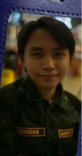

ARCHIVE COPY // SOURCE:NATIONAL BUREAU OF INVESTIGATION
CASE 2316 - DISAPPEARANCES OF CLASS 2-2
FILE NAME: MN-09152006-01
FILE CLASSIFICATION: HIGHLY CONFIDENTIAL
LAST MODIFIED: NOVEMBER 1 2026
STATUS: UNRESOLVED
SUBJECTS LISTED: 05
ASSOCIATED FILE: SCP-23██
REVIEW: ██████████
Five students were reported missing on October 15, 2026. Personal belongings were recovered the following morning. No further sightings have been confirmed.
The following entries were compiled from school records and an incomplete supplementary document.
SUBJECT RECORDS

01 — Miguel Bapilar
Notable trait: 5'4, Wears glasses, Lazy, █████████████
Last verified record: 15/10/26
Remarks: Perfectly average individual.

02 — Joseph Carlo Betito
Notable trait: 5'8", Athletic
Last verified record: 15/10/26
Remarks: See attached note [MISSING].

03 — Jomary Andrew Castor
Notable trait: 5'5", Black hair, Introverted, Wears glasses
Last verified record: 15/10/26
Remarks: Entry amended after submission.
04 — Melissa Marcaida
Notable trait: 5'5", Bright red hair, Extroverted
Last verified record: 15/10/26
Remarks: Original entry unavailable.

05 — Ethan Jacob Morgan
Notable trait: 5'5", Brown skin, skinny build
Last verified record: 15/10/26
Remarks: Refer to supplementary file.
SUPPLEMENTARY NOTES
- All 5 individuals belonged to the same class and section.
- All 5 individuals were last seen entering the building known as: "Charlie Del Rosario Building" on PUP Main Campus the night of October 15, 2026.
- All 5 individuals were confirmed to be members in a rumored secretive underground school club known as: "Children of the ████████████".
One or more entries could not be matched to a subject.
RECOVERED DOCUMENT
DATE RECOVERED: 16/10/26
CONDITION: PARTIAL
"...all five names appear in the original copy."
"The attached photograph count is correct."
"Do not replace the missing entry with the earlier version. It has already been reviewed and approved by the site Director Reg█e ████"
[REMAINDER UNAVAILABLE]